Un aspirante
…se interesa en tres programas y no puede comparar costos, duración y opciones de financiación?
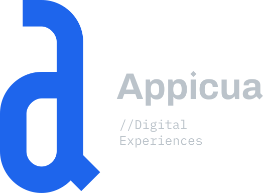
Para una mejor experiencia, activa la pantalla completa.
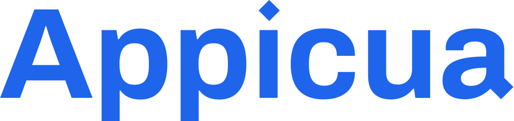
Pitch
Estrategia | UX | Tecnología | Aprendizaje | IA
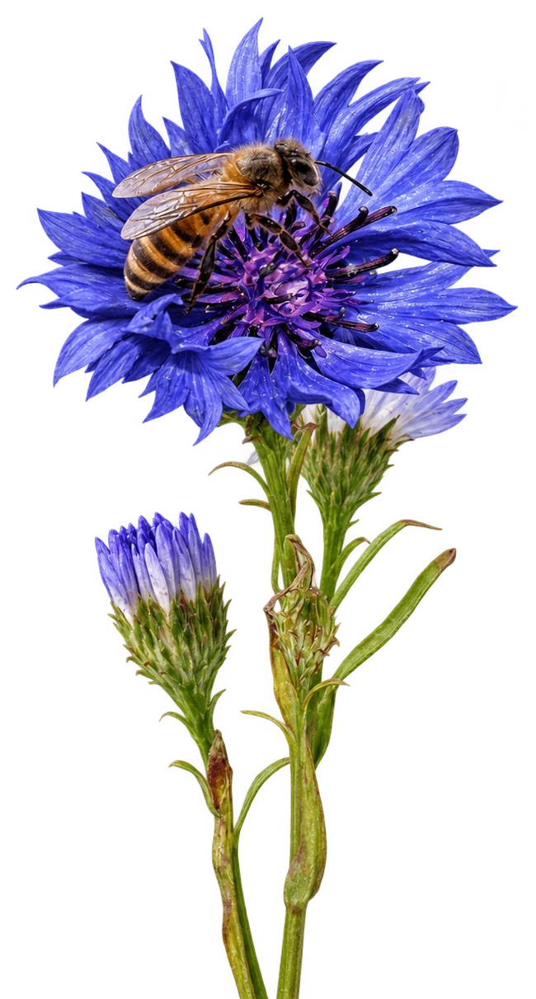
…se interesa en tres programas y no puede comparar costos, duración y opciones de financiación?
…intenta inscribir materias en una plataforma que su lector de pantalla no entiende?
…debe sacar información de cinco sistemas para resolver una homologación?
…busca un recurso que ya existe, no lo encuentra y lo tiene que volver a producir?
…debe publicar decenas de piezas y videos al mes, asegurando calidad y consistencia?
…quiere volver por un curso o un posgrado y no conoce los beneficios a los que tiene derecho?
El reto
Ya no basta con matricular: hay que acompañar. Cada fricción digital del primer año pesa.
22 %
abandona en el primer año (OCDE: 13 %)Adultos que trabajan, regiones y educación continua piden experiencias digitales de alta calidad.
+12,5 %
creció la matrícula virtual en 2024Con más competencia, hay que comunicar mejor oferta académica, perspectiva educativa y beneficios.
2,3 %
creció la matrícula privada en 2025, frente a 10,3 % la oficialPlataformas, apps e IA crecen por separado. Sin integración ni gobierno, la comunidad educativa experimenta fricciones, reprocesos y desconfianza.
26 %
tiene estrategia formal de IA, aunque el 87 % ya la usaFuentes: OCDE; MEN / SNIES (2024–2025); UNESCO-IESALC (IES de América Latina y el Caribe).
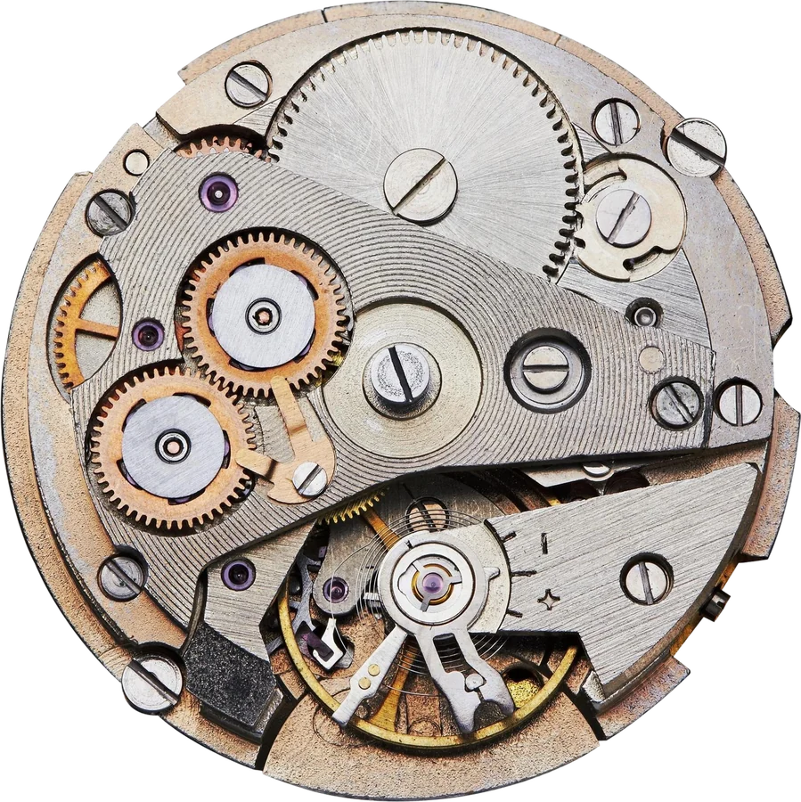
Quiénes somos
Más de una década con universidades, centros de investigación y organizaciones sociales. Hablamos de acreditación, virtualidad y permanencia, no solo de pantallas.
Arquitectura, desarrollo y accesibilidad con estándares abiertos. El código y los sistemas quedan en manos de la institución.
Investigamos con estudiantes, docentes y administrativos, y medimos si lo que construimos funciona.
Han confiado en nosotros
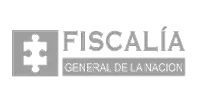
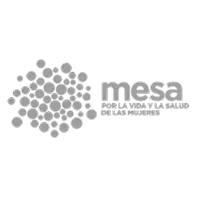
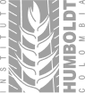
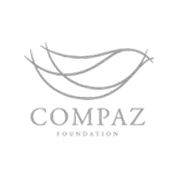
Cómo trabajamos
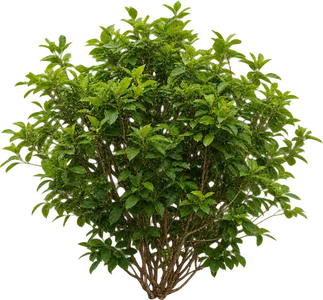
01Partimos de un dolor concreto: entendemos proceso, personas y tecnología, implementamos la solución y documentamos todo para escalarla.
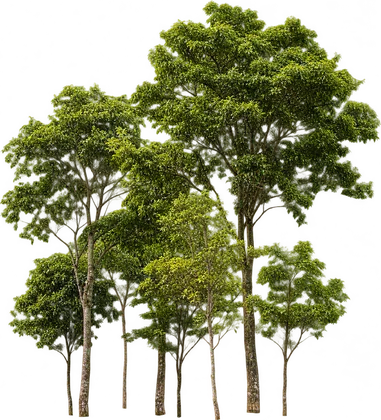
02Ejecutamos por fases cortas: plataformas, repositorios, cursos o sistemas de diseño. Cada fase termina funcionando en producción.
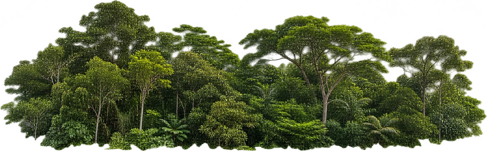
03Medimos uso y experiencia, damos soporte y proponemos la siguiente mejora. Cada ciclo nos acerca más a la institución.
Qué resolvemos
Toca las tarjetas para ver más información
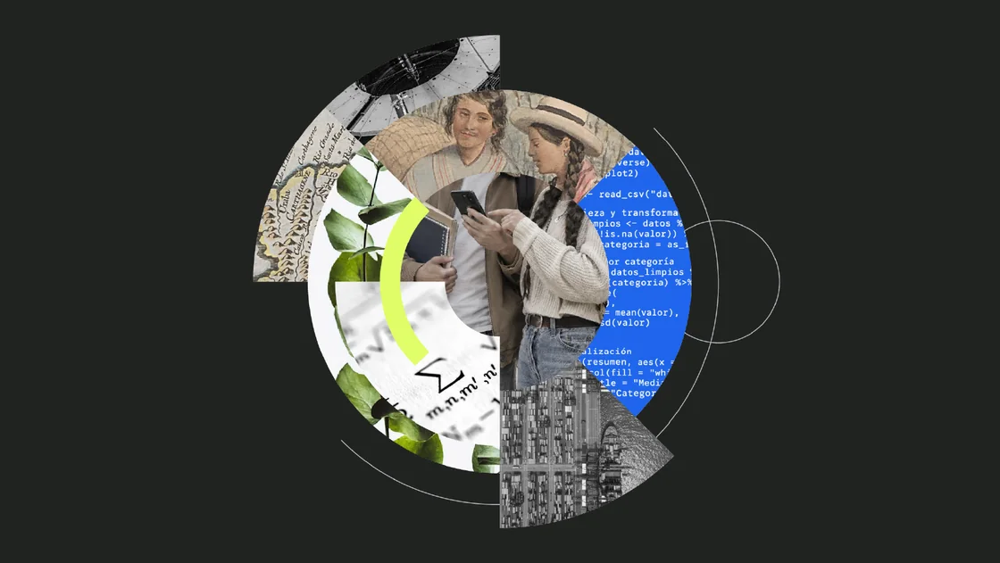
01Para conectar, organizar y aprovechar el conocimiento a escala.
Diseñamos y desarrollamos ecosistemas digitales que conectan información, personas y sistemas. Creamos plataformas, portales y aplicaciones escalables, apoyados en arquitecturas sólidas, sistemas de diseño e integraciones tecnológicas. Incorporamos inteligencia artificial y automatización para optimizar procesos, facilitar el acceso al conocimiento y potenciar la evolución digital de las organizaciones.
Volver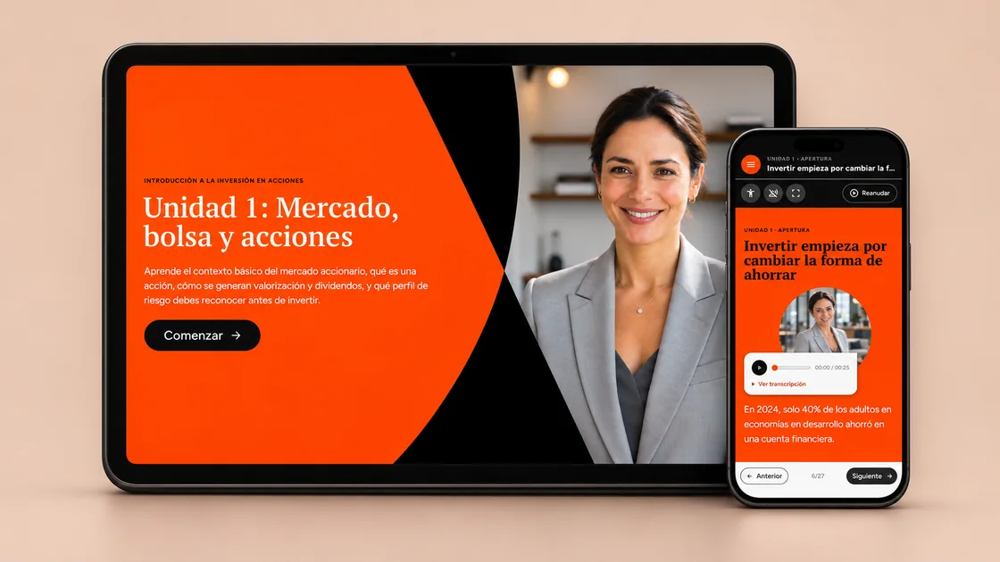
02Para transformar el conocimiento en aprendizaje y nuevas capacidades.
Diseñamos experiencias educativas que convierten conocimientos especializados en procesos de aprendizaje atractivos, accesibles y efectivos. Combinamos diseño instruccional, tecnología, interactividad y recursos multimedia para desarrollar cursos virtuales, simuladores, contenidos educativos y entornos de formación que promueven la participación, la apropiación del conocimiento y el desarrollo de habilidades.
VolverPara hacer comprensible lo complejo y comunicar lo que importa.
Transformamos datos, investigaciones, información y conocimiento especializado en narrativas digitales que despiertan interés, facilitan la exploración y generan comprensión. Combinamos storytelling, visualización de datos, diseño e interactividad para crear informes interactivos, publicaciones digitales, visualizaciones, contenidos multimedia y herramientas de divulgación que acercan el conocimiento a diferentes audiencias.
VolverPolitécnico Grancolombiano · 1/3
Un reto puntual: un proceso con estudiantes, administrativos y varios sistemas de por medio. Pequeño en alcance, pero con una pregunta de fondo: ¿cómo funciona de verdad la institución?
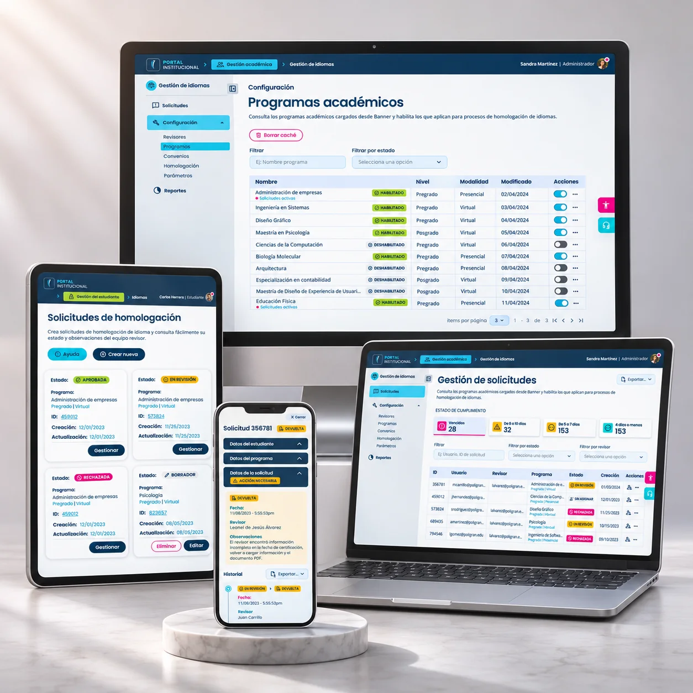
Politécnico Grancolombiano · 2/3
El inicio
App de homologación de idiomas
Cómo se conectan sitios, apps y sistemas
WCAG 2.2 AA, documentado para toda la comunidad
Inventario de 507 aplicativos: responsables, riesgos y prioridades
Bases front y back para nuevos desarrollos
Aplicativo de gestión de roles y permisos
KPIs de experiencia con GA4, Clarity, NPS y CSAT
Transferencia de conocimiento a los equipos de desarrollo, diseño y comunicación
Politécnico Grancolombiano · 3/3
Reducciones medidas en los primeros aplicativos construidos con el nuevo sistema.
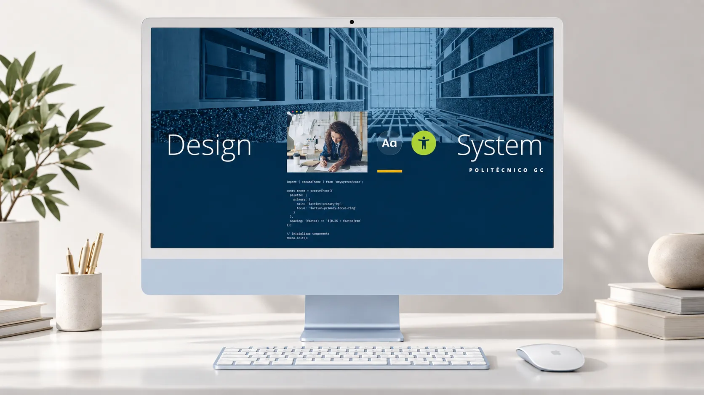
El primer paso
SESIÓN SIN COSTO: 90 minutos para identificar el primer reto.
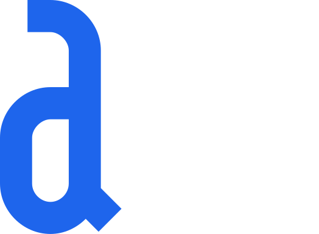
Jose Mejía
// Desarrollo de negocios
jose.mejia@appicua.com +57 313 477 8281 appicua.com